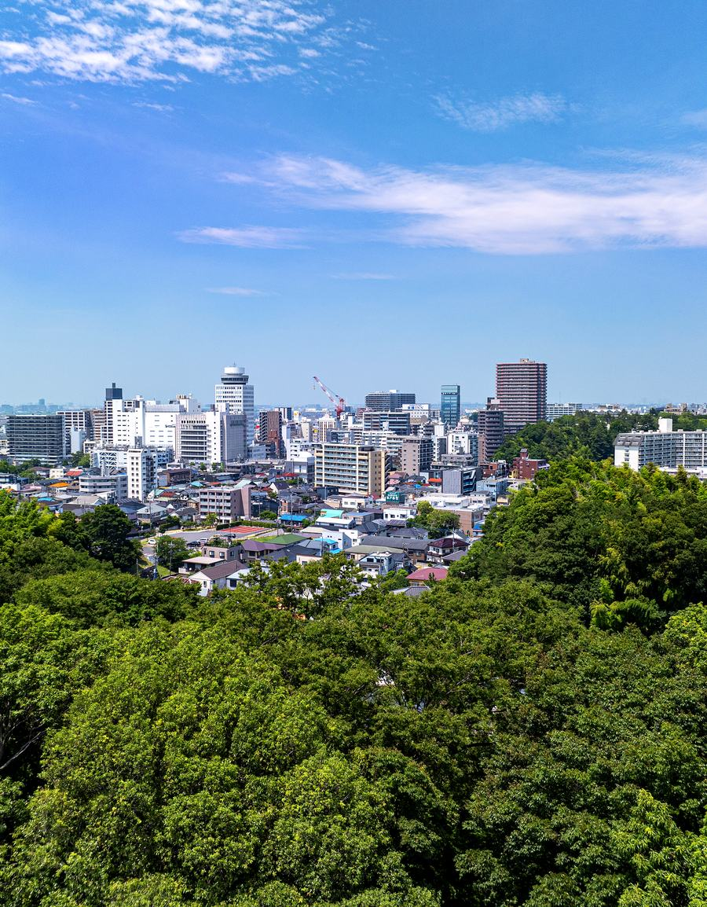

Matsudo Robot Events
ロボットイベント情報サイト
当サイトについて
このサイトは、松戸技術革新センター（M-TIC）および関連団体が主催するロボット関連イベントの情報をお届けするランディングサイトです。
各イベントの詳細ページへのリンクから、開催日程、参加方法、イベント内容などの詳しい情報をご確認ください。
イベント一覧
Events

Matsudo Robot Events
このサイトは、松戸技術革新センター（M-TIC）および関連団体が主催するロボット関連イベントの情報をお届けするランディングサイトです。
各イベントの詳細ページへのリンクから、開催日程、参加方法、イベント内容などの詳しい情報をご確認ください。
Events